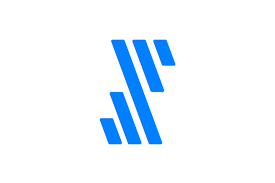
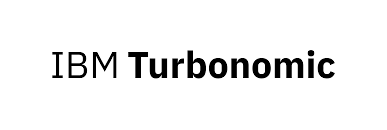

-

WRITER
Scaling GTM for the generative AI platform for enterprise work.
-

Fivetran
Scaled Demand Generation from $25M to $250M.
-

Turbonomic
Ran demand and digital through the IBM acquisition.
-
MongoDB
Created the Demand Generation function during the growth that led to IPO.